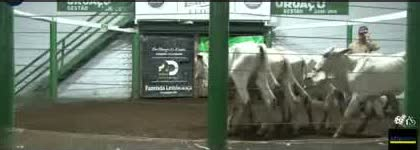

A · Painel de preços
Site/app "planilha inteligente": filtros em cima, números e ranking. Para quem gosta de comparar.
9:41●●● 5G
◎ Radar BoiBarro Alto/GO · semana 02 a 08/11
Fêmeas6–8@Só brancas250 kmVender 15@
@ de reposição na regiãoR$ 440Scot GO: R$ 438
Mais baratoR$ 325/@Uruaçu · 55 km
Margem até 15@R$ 2.406sem custo de recria
Cabeças brancas35316 lotes
Leilões do mais barato ao mais caro
1ºWM Uruaçu
55 km · qua 28/10 · 20 cab
R$ 325/@-26% Scot
2ºWM Uruaçu
55 km · qua 04/11 · 14 cab
R$ 328/@-25% Scot
3ºJPS Niquelândia
73 km · ter 03/11 · 9 cab
R$ 339/@-23% Scot
4ºBrasil Leilões Porangatu
172 km · seg 26/10 · 310 cab
R$ 456/@+4% Scot
▦ Ranking☰ Lotes📈 Histórico🔔 Alertas⚙ Fazenda
Prós: já está pronto, mostra muito número, bom para quem compra volume e para o sócio analisar.
Contras: o fazendeiro precisa lembrar de abrir. Menos "emocional".
B · Tudo pelo WhatsApp
Sem app: o fazendeiro conversa com o Radar Boi no WhatsApp, recebe o resumo de segunda e alertas de lote barato.
9:41●●● 5G
◎
Radar Boiconta comercial · online
Bom dia, Gabriel! Resumo da semana 🐂Bezerra branca 6–8@ até 250 km de Barro Alto:
| 1º Uruaçu (55 km) | R$ 325/@ |
| 2º Niquelândia (73 km) | R$ 339/@ |
| 3º Porangatu (172 km) | R$ 456/@ |
| Scot GO | R$ 438/@ |
Ver painelPDF
06:00
tem bezerra branca de 12 meses quarta em uruaçu?
07:12 ✓✓
Quarta 11/11, 20h, WM Uruaçu. O catálogo ainda não saiu. Te aviso quando a bezerra branca entrar na pista 👍
07:12

🔴 Entrando agora: WM Uruaçu7 bezerras brancas · 12 m · ~210 kg
Lance:
R$ 2.330 = R$ 333/@ (-24% Scot)
▶ AssistirLigar leiloeiro
20:41
Prós: o fazendeiro já vive no WhatsApp, não precisa baixar nada, alerta na hora. Mais fácil de vender.
Contras: custo da API do WhatsApp por mensagem, pouco espaço para tabelas grandes.
C · Vitrine de lotes (app)
App estilo "feed": cada lote é um card com foto do gado, preço, @ e distância. Favoritar, alertar e, no futuro, comprar.
9:41●●● 5G
◎ Radar Boi🔔 ⚙
Mais barato /@Mais pertoMapa
● AO VIVO · Bambu Campinorte (77 km) · lote 18 de 60
7 bezerras · 12 mR$ 2.330
WM Uruaçu · 55 km · 28/10 · ~210 kg · R$ 11,10/kg
✓ 100% brancasR$ 333/@ · -24% Scotmargem 15@: R$ 3.141
▶ ver no vídeo☆ salvar🔔 avisar parecido
7 bezerras · 12 mR$ 2.415
JPS Niquelândia · 73 km · 03/11 · ~210 kg
✓ 100% brancasR$ 345/@ · -21% Scot
⌂ Lotes📅 Agenda☆ Salvos📈 Preços👤 Conta
Prós: mais visual (o fazendeiro vê o gado), base natural para virar marketplace depois.
Contras: precisa baixar app (lojas Apple/Google), mais caro e demorado de construir.